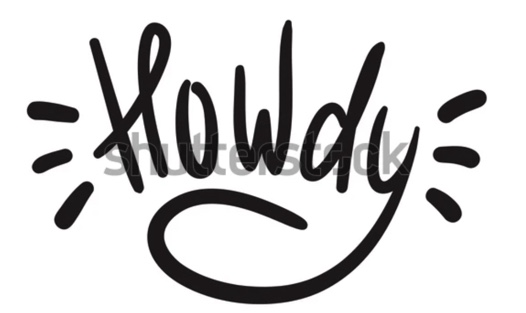

Hello & Welcome!
Hello and welcome to my website! I am so glad you stopped by! The purpose and objective of this website is to professionally showcase myself to recruiters and interested individuals. I want a web space where I can write about my life experiences and visually aid them. This space will serve as a main point of contact for anybody who may be interested in diving deeper into some of my projects or simply just looking to gain a better understanding of myself. Please feel free to navigate yourself and if you have any sort of questions, feel free to reach out to me! Thank you again, for stopping by!
*Side Note: This website is a work in progress so if you have any tips, feedback, suggestions, or constructive criticism about how I can improve my website, please let me know. You can send an email my way.
